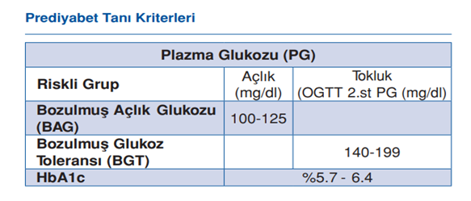

Dünya Diyabet Günü
1921 yılında insülini bularak diyabet hastası milyonlarca hastanın tedavisini mümkün kılan Fredrick Bantig‘in doğum yıl dönümü olan 14 Kasım, Dünya Sağlık Örgütü'nün (WHO) ve Dünya Diyabet Federasyonu’nun (IDF) ortak kararıyla Dünya Diyabet Günü olarak kutlanmaktadır.
Glikoz Metabolizmasına Genel Bir Bakış
Vücudumuzun enerji ihtiyacı, yiyeceklerimizdeki temel besin öğeleri karbonhidrat, protein ve yağlardan sağlanır. Emilebilmek için en küçük parçalarına ayrılan besin öğelerinin en önemlisi “glikoz” adı verilen basit şekerlerdir. Glikoz başta beyin olmak üzere vücudun tüm organlarının önemli bir besin kaynağıdır.
Diyabet hastalığını anlayabilmek adına şekerin vücudumuzdaki yolculuğunu ve şeker hastalığına gidiş serüvenini basitleştirerek anlatmaya çalışacağım;
- Güzel bir öğlen yemeği sonrasında yediğimiz yiyecekler sindirim sisteminde işlem gördükten sonra, kanda şekerimiz yükselir
- Kanımızda yükselen şeker sonrası pankreastaki hücreler kandaki şeker değişimini algılayıp insülin hormonu salgılanır,
- İnsülin hormonunun salgılanması doku ve organlar için şeker kapılarının açılışı, şekerin kapılardan içeriye girişi demektir.
Şekerin kandan doku ve organlara geçmesi enerji metabolizmamız için kritik öneme sahiptir.!!!
Diyabet hastalığı bu mekanizmadaki aksamalar nedeniyle meydana gelir. Tip 1 diyabette bunun ana sebebi pankreastaki insülin salgılayan hücrelerin otoimmün (bağışıklık sisteminin kendi hücrelerine saldırması yoluyla) harabiyetidir. Tip 2 diyabet ise özünde bir beslenme ve yaşam tarzı bozukluğunun sonucudur. Ya sık sık beslenerek pankreasın yorulması ya da vücut depolarının fazla fazla doldurularak kandaki glikoza yer kalmaması nedeni ile meydana gelir.
Tip 2 diyabet yolu bir patikadır ve çeşitli adımları izler.
Bu adımlar:
- İnsülin direnci
- Prediyabet (gizli şeker)
- Diyabet
şeklindedir. Her adımda geri dönüş yolu vardır ancak bu her bir adımla birlikte biraz daha zorlaşır.
İnsülin Direnci Nedir?
Tip 2 diyabet sürecinin gizli şeker dönemi öncesinde bizleri hastalık konusunda uyarıcı etkisinden dolayı oldukça önemlidir.
İnsülin direnci, kaslarınızdaki, yağınızdaki ve karaciğerinizdeki hücrelerin insüline iyi yanıt vermemesi ve kanınızdaki glikozu enerji için kullanamamasıdır
Bunu telafi etmek için pankreasınız daha fazla insülin üretir. Zamanla, kan şekeri seviyeniz yükselir. Müdahale edilmezse süreç prediyabete (gizli şeker) ve diyabete dönüşecektir. Sağlık şikayetleriniz olsun veya olmasın kontrol amaçlı yaptırmış olduğunuz kan tetkikinde insülin direnci saptanmış ise şeker metabolizmasına ait durumunuzun kontrolü ve sonrasında etkin bir tedavi modeli için hekiminize danışmanızı öneriyorum.
Prediyabet (Gizli Şeker) Nedir?
Tip 2 Diyabet tanısı konulmadan önce kan şekerinin normalin üzerinde seyrettiği bir dönem vardır,bu döneme Pre-Diyabet(Bozulmuş Açlık Glikozu) namı diğer Gizli Şeker diyoruz.
Gizli şeker döneminde kan şekeri normal den yüksek fakat kan şekeri seviyesinin şeker hastalığı tanısı koymaya yetecek kadar yüksek olmadığı durumu tanımlar.
Kan şekeri yüksekliğine bağlı gizli şeker döneminde vücutta olumsuz sağlık etkileri başlamış ve kan şekeri seviyesinin düzensiz olarak yüksek kaldığı sürece olumsuz sağlık etkileri devam etmektedir. Süreç devam ettiğinde Diyabet hastalığına evrilecektir.
Diyabet Nedir?
Şeker hastalığı ya da diyabet (Diabetes Mellitus), pankreasın vücut için yeterli miktarda insülin üretememesi ya da ürettiği insülinin vücut tarafından etkili bir şekilde kullanılamaması sonucunda ortaya çıkan, yüksek kan şekeri ile seyreden bir hastalıktır. Diyabet Tip1 Diyabet ve Tip2 Diyabet olmak üzere 2 tiptir. Tip 1 diyabet, pankreasta bulunan ve insülin üreten beta hücrelerinin otoimmün bir süreç sonunda zedelenmesi ile meydana gelmektedir. Hastalar, mutlak veya göreceli bir insülin yetersizliği olduğundan ömür boyu insülin hormonunu dışardan (enjeksiyon yoluyla) almak zorundandırlar. Tip2 Diyabet, pankreasın ürettiği insülinin vücut tarafından etkili bir şekilde kullanılamaması sonucunda ortaya çıkan, yüksek kan şekeri ile seyreden bir hastalıktır.
Tip 2 Diyabet Riski Kimlerde Daha Fazladır?
- Ailesinde diyabetli olanlar,
- Şişman kişiler,
- 4 kg’dan daha ağır bebek doğuran kadınlar,
- Stres altında yaşayan kişilerde diyabetin görülme riski daha yüksektir.
Ayrıca pankreasın kronik iltihabı, pankreas tümörleri ve ameliyatları ile hipertiroidi, akromegali gibi bazı hormon hastalıkları Tip 2 diyabete yol açabilir.
Tip 2 Diyabetin Belirtileri Nelerdir?
- Sık idrara çıkma,
- Ağız kuruluğu,
- Çok su içme,
- Zayıflama,
- Açlık hissi,
- Cilt yaralarının geç iyileşmesi,
- Kuru ve kaşıntılı bir cilt,
- Sık sık enfeksiyon gelişmesi,
- Ellerde ve ayaklarda uyuşma, karıncalanma görülür. Ancak bu belirtiler zaman içinde yavaş yavaş ortaya çıkar.
Çok idrar yapmak, Sık idrara çıkmak
Vücutta insülin yapılamadığı zaman, insülin hormonunun normalde sorumlu olduğu işlevler yapılamaz, yani glikoz hücreler tarafından enerji olarak kullanılamaz ve kanda birikir. Belli bir düzeyden sonra da böbreklerden idrar yolu ile şeker atılmaya başlar. İdrarla atılan şeker beraberinde suyu da sürükleyeceğinden kişi çok idrar çıkarmaya ve sık idrara çıkmaya başlar.
Çok su içmek
İdrarla aşırı su kaybedilince aşırı su içme ihtiyacı duyulur.
Zayıflamak
Öte yandan alınan gıdalardan yararlanamayan vücut hücreleri enerji kaynağı olarak depolardaki yağları yakıt olarak kullanmaya başlar ve kişi zayıflar. Bu belirtilerin ortaya çıkması için gereken süre, pankreas bezinin beta hücrelerindeki tahribatın miktarına ve yakım hızına bağlıdır. Tahribat haftalar, aylar, hatta yıllar boyunca sürebilir. Tahribatın hızlı ve kısa sürede tamamlandığı durumda vücut enerji ihtiyacı için kendi proteinlerini ve yağlarını kullanmak zorunda kalır. Özellikle yağların aşırı yıkımıyla oluşan, keton cisimleri adı verilen son ürünler vücut için zararlı atıklardır, vücutta birikerek ketoasidoz denilen acil tabloyu meydana getirirler. Ketoasidozun belirtileri ise, karın ağrısı, hızlı solunum, aşırı halsizlik ve yorgunluktur. Böyle bir durumda derhal acil olarak hastaneye başvurmak gerekir.
Şeker Hastalığının İnsan Vücudunda Sebep Olduğu Olumsuz Etkiler
Kan şekeri kontrolünün sağlanamaması, kısa veya uzun dönemde sağlık sorunları oluşturur.
Diyabet küçük ve büyük damarlarla birlikte sinirlerin de hasar görmesine neden olabilir.
Diyabetin neden olduğu bu hasarlar komplikasyon olarak tanımlanır. Diyabetin akut ve kronik komplikasyonları hem Tip 1 hem de Tip 2 diyabetli bireylerde görülebilir.
Diyabetin Akut Olarak Gelişebilen Olumsuz Sağlık Etkileri Nelerdir?
Düşük kan şekeri (hipoglisemi) : Kan şekeri fazla düştüğünde (çok fazla insülin, çok fazla egzersiz ya da yetersiz enerji alımı sonucu) kişi normal fonksiyonlarını yapamaz. Hipoglisemi, şekerli meyve suyu, kesme veya toz şeker almakla hızla düzelir.
Ketoasidoz: Diyabetik koma da denen ketoasidoz insülin yokluğuna bağlı ağır bir durumdur. Esas olarak sıklıkla tip 1 diyabetli kişilerde sık görülür.
Laktik asidoz: Laktik asidoz, vücutta laktik asit birikmesidir. Hücreler enerji olarak glukoz dışı yakıt kullandıklarında laktik asit yaparlar. Eğer çok fazla laktik asit vücutta kalırsa, denge bozulur ve kişi kendini rahatsız hissetmeye başlar. Daha az sıklıkta görülen bu durum, esas olarak tip 2 diyabetli kişileri etkiler.
Bakteriyel / fungal (mantar) enfeksiyonlar: Diyabetli kişiler cilt ve tırnaklarda sık olmak üzere tüm organlarda bakteriyel ve fungal kaynaklı, enfeksiyonlara daha açık hastalardır.
Diyabetin Kronik Olumsuz Sağlık Etkileri Nelerdir?
Uzun bir süre kan şekerinin yüksek olması, büyük ve küçük damarları ve sinirleri tahrip eder. Tahribat hangi organda ise ona ait sorunlar görülür.
Kardiyovasküler hastalık : Birçok ülkede, kardiovasküler hastalık ya da dolaşım sistemi hastalığı diyabetli kişiler arasında en başta gelen ölüm sebebidir. Diyabetli kişilerde kalp hastalığı ya da inme riski 2-5 kat daha fazladır. Bacaklardaki damarlar da etkilenir ve bu nöropatiyle beraber amputasyona yol açabilir.
Retinopati (Gözlerin hasar görmesi): Yetişkinlerdeki körlük ve görme bozukluğunun önde gelen sebebidir. 15 yıl boyunca diyabetik olan, şekeri kontrolsüz kişilerin % 2'si kör olurken, % 10'unda ağır görme bozukluğu gelişir.
Nefropati (Böbreklerin hasar görmesi): Diyabetli kişiler için büyük bir tehdittir. Kontrolsüz tip 1 diyabetli kişilerin % 40'ında 50 yaşına geldiklerinde diyaliz ve/veya böbrek nakli gerektirebilecek, ağır böbrek hastalığı gelişebilir.
Nöropati (Sinirlerin hasar görmesi): Diyabetli kişilerin en az yarısını etkiler. Diyabetik sinir hastalığı, bacaklarda ve ayaklarda duyu kaybına yol açabilir ve bu da ayak yarası ve bacak kesilmesi ile (amputasyon) sonuçlanabilir. Bacak amputasyonlarında kaza dışı nedenlerin başında maalesef diyabet gelmektedir. Diyabetik sinir hastalığı ayrıca iktidarsızlığa da yol açabilir.
Diyabet Nasıl Tedavi Edilir?
Sağlıklı Beslenme: Yenilen besinlerin özellikle karbonhidrat içeren besinlerin vücudun ihtiyacından fazla tüketilmesi kan şekeri seviyelerini yükseltir. Kan şekeri kontrolünün sağlanmasında diyabetli bireye özgü beslenme tedavisinin verilmesi önemlidir.
Diyabetli kişilerle diğer kişilerin besinlere olan gereksinimi aynıdır. Her insanın enerji, karbonhdirat, protein, yağ, lif, vitamin, mineral gereksinimi vardır. Bir kişide diyabetin olması bu gereksinimlerden birini veya birkaçını azaltması veya arttırması anlamına gelmez.
Egzersiz: Egzersiz, vücudunuzun glikozu etkili bir şekilde kullanmasını ve kan şekeri kontrolünü sağlar. Ayrıca, şişman tip 2 diyabetli kişilerin kilo kaybetmesine yardımcı olur.
İlaç/ İnsülin: İnsülin, besinlerle kana geçen şekerin vücut tarafından kullanılmasını sağlayan ve böylece kan şekeri yükselmelerini önleyen bir hormondur. Tip 1 diyabetli kişilerin yaşamak için insüline gereksinimi vardır. İnsülin bağımlılık, alışkanlık yapacak bir madde değildir. İnsülin yaşam için elzemdir. Vücut insulin yapmıyor ise dışardan enjeksiyon yolu ile vücuttaki eksikliği yerine koymak gerekir. Tip 2 diyabetli kişilerin kan şekerinin ayarını sağlamak için ağızdan alınan ilaçlara veya insüline gereksinimleri olabilir.
Yukarıdaki maddelerin tümü arasında bir denge tutturmak önemlidir. Bu dengenin oluşması için diyabetli birey mutlaka diyabet ve tedavisi konusunda eğitim almalıdır.
Son söz; Hareketsiz yaşam ve sağlıksız beslenme insülin direnci ile başlayan şeker hastalığına giden bir sürecin fitilini ateşler ,süreci tersine çevirmek elinizde….Sağlıkla Kalın
Kaynakça Türk Diyabet Vakfı
Derleyen: Dr. Gökhan YENER